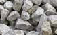
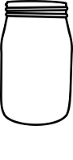
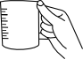
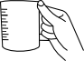

Specific gravity of coarse aggregates
Objective
To determine the specific gravity of given sample of coarse aggregate using pycnometer.
Apparatus used:
Pycnometer, Weighing scale, Glass rod etc.
Description Specific Gravity of Coarse Aggregates is the ratio of weight of known volume of the coarse aggregates to the weight of the equal volume of water at the room temperature.


Take empty weight of pycnometer along with its cap.

Empty weight of pycnometer(W1)= _____ g
_____
Open the cap to fill one third of pycnometer with coarse aggregate and weigh the pycnometer with aggregate.




Weight of pycnometer + 1/3rd of coarse aggregate(W2)= _____gm
_____
Add water to pycnometer upto the brim level and shake it well to remove air bubbles. Then weigh it using weighing scale.

 

Weight of pycnometer + 1/3rd of coarse aggregate +water (W3)=_____ gm
_____
Empty the pycnometer and fill water upto brim. Weigh the pycnometer.
Weight of flask+water (W4) = _____ gm
_____
Observation :
Weight of empty pycnometer (W1)= _____ gm
Weight of pycnometer + 1/3rd of coarse aggregate (W2) = _____gm
Weight of pycnometer + 1/3rd of coarse aggregate + water (W3) = _____ gm
Weight of pycnometer + water(W4) = _____ gm
✔
✘
Specific Gravity of Coarse Aggregate= ( W2-W1 )⁄( W4-W1 )-( W3-W2 )Specific Gravity of Coarse Aggregate =
✔
✘
Specific Gravity of Coarse Aggregate= ( W2-W1 )⁄( W4-W1 )-( W3-W2 )Specific Gravity of Coarse Aggregate =
Observations:
| Trial | Specifc Gravity of Coarse Aggregate | Average Specific Gravity |
| 1 | ||
| 2 |
✔
Inference:
What is the suggested range of Specific Gravity of Coarse Aggregate?
less than 2.5 2.5 - 2.8 greater than 2.8Trial =